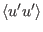
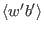
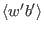
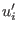
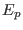
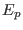
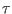

Next: Algebraic Models Up: The turbulence model Previous: Introduction Contents
Since one-point second-order models are an essential part of GOTM,
this section is devoted to a detailed discussion of the derivation and
the properties of these models. Second-order models result from the
full or approximate solution of the transport equations for the
turbulent fluxes like
,
 ,
,
etc. Model equations for the turbulent momentum fluxes follow directly
from the Navier-Stokes equations. The derivation of these equations
for stratified and rotating fluids is discussed e.g. in
Sander (1998).
,
,
etc. Model equations for the turbulent momentum fluxes follow directly
from the Navier-Stokes equations. The derivation of these equations
for stratified and rotating fluids is discussed e.g. in
Sander (1998).
Considering the one-point correlations for the velocity fluctuations , the momentum fluxes can be expressed as
The contraction of (46) yields the equation for the turbulent kinetic energy, (150), with production terms defined by
Similar to (46), the transport equation for the turbulent buoyancy flux is given by
Note that  is half the buoyancy variance and relates to the
turbulent potential energy, , according to
is half the buoyancy variance and relates to the
turbulent potential energy, , according to
The crucial point in (46) is the model for the pressure-strain correlation. The most popular models in engineering trace back to suggestions by Launder et al. (1975) and Gibson and Launder (1976). With the modifications suggested of Speziale et al. (1991), this model can be written as
For Explicit Algebraic Heat Flux Models, a quite general model for the pressure buoyancy-gradient correlation appearing in (49) can be written as
The models (51) and (57) correspond to some recent models
used in theoretical and engineering studies (So et al. (2003),
Jin et al. (2003)), and generalize all explicit models so far
adopted by the geophysical community (see Burchard (2002b),
Burchard and Bolding (2001)). With all model assumptions inserted,
(46) and (49) constitute a closed system of 9 coupled
differential equations, provided the dissipation time scale  and
the buoyancy variance  are known. Models for the latter two quantities
and simplifying assumptions reducing the differential equations to
algebraic expressions are discussed in the following subsection.
are known. Models for the latter two quantities
and simplifying assumptions reducing the differential equations to
algebraic expressions are discussed in the following subsection.
Karsten Bolding 2012-01-24